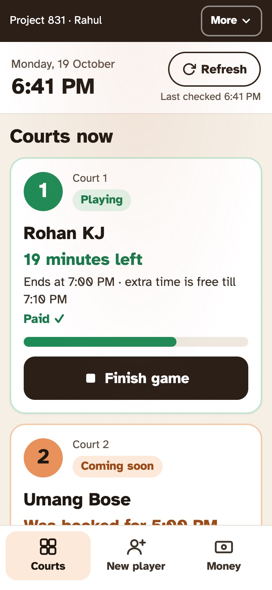
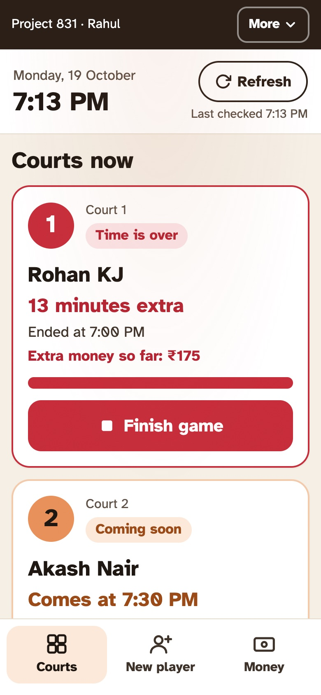
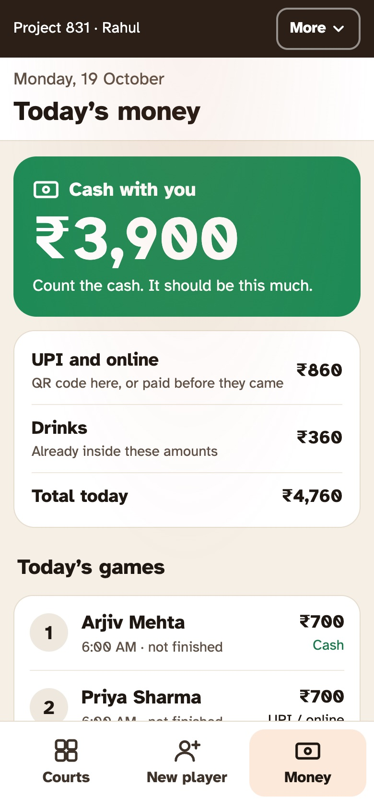

The desk stopped doing maths.
At a two-court pickleball venue, every booking that ran over turned into a negotiation at the front desk. I designed and built a staff mode where two taps, Start and Finish, produce the number, and a bill the customer can read settles it.
Live data, 21 Jul – 19 Oct 2026: confirmed court bookings only, cancelled and deleted rows excluded. The owner's account: most of the unrecorded money was cash collected at the desk and never written down.
One hour, four versions of it.
A booking says 6 to 7. What actually happens is a phone call, a late start, a late finish and a group waiting for the court. Everyone has a different hour in mind, and the person at the desk is left to referee with mental arithmetic.
“Running ten minutes late. Hold it for us?”
“We started late, so we're not over.”
“Thirteen minutes at ₹700 an hour is… make it ₹100?”
“We waited too. Take it off ours.”
Late, early, "hold it", "add a court". Every change came in by voice and lived in someone's memory.
Per-minute pricing worked out at the counter, with a queue watching. Every desk worker rounded differently.
An uncertain number invites a counter-offer. The person with the least authority set the price.
Groups arrive at different times from the hour they booked, so "your hour" means something different to each side.
The booking was the only record. Nothing captured when play actually began or ended.
Starting late became the reason to finish late, and finishing late became the reason not to pay.
Every argument was about one number. So the system should own that number, not the desk.
The clock is the witness.
Time starts when staff tap Start, not when the booking says. Arriving late costs the customer nothing, and the overrun is measured from when they really began.
The rule is published, not argued.
A grace window and fixed steps, printed on every bill. The customer argues with a sentence on paper, not with a person.
The desk records, it doesn't calculate.
Staff never type an amount. They tap what happened: started, finished, two waters, paid by UPI. The number follows.
Ten minutes free, then fifteen-minute steps.
Per-minute billing is precise and impossible to defend at a counter. Steps are coarse and easy to say out loud. The grace window absorbs packing up and saying bye, so the first charge only lands when someone has clearly kept playing.
| Played | Charged | Extra at ₹700/h |
|---|---|---|
| 1h 01 | 1h | ₹0 |
| 1h 10 | 1h | ₹0 |
| 1h 11 | 1h 15 | ₹175 |
| 1h 25 | 1h 15 | ₹175 |
| 1h 26 | 1h 30 | ₹350 |
| 1h 41 | 1h 45 | ₹525 |
The evening from section 01 comes out at ₹0: 61 minutes from Start. The rule settled what the desk couldn't, and the answer happened to favour the customer, which is the point: a fair default is what makes the rule enforceable.
Owner settings: 15 or 30-minute steps, the grace window, and a step price that rounds up to the next ₹10.
Written for one person, who doesn't read much.
The desk worker is the user, not the owner. He reads slowly, works standing up, and is often mid-conversation. That ruled out labels, abbreviations, status codes, timers in mm:ss and any icon without a word next to it. It took three directions to get there. The same moment, a court twelve minutes over, in each:
A competent dark dashboard. Generic, and the owner said so: "looks bad".
A court board with character. Also a cockpit: mono type, caps, numbers without sentences. "Too tech-savvy, intimidating."
Light, warm and plain. Reads like a person talking. Typeset in Atkinson Hyperlegible, drawn so that similar letters and digits can't be confused.
Courts now, Finish, take the money.
Three tabs: Courts, New player, Money. The home screen is a live board of the courts. Countdowns tick every 30 seconds, new bookings arrive within five minutes, and Refresh is one tap away, so nobody has to phone the owner to ask who's next.





Screens from the shipped app running on mock data; the names are made up.
A till slip the customer trusts.
The first bill was a list of rows, and the owner called it "plain and random". A receipt is the most trusted document at any counter, so the redesign borrows its grammar: warm paper, dark ink, a torn edge, and exactly one accent colour.
The two facts both sides agree on, boxed.
Started and Finished sit in their own boxes at the top. Every other line on the slip follows from them.
A bar you can match to the lines.
Booked, extra and not charged share the same three marks on the bar and beside each line , so the customer can point at the bar and find the price.
One accent, with a job.
Terracotta is used only for extra time and for what's left to pay. Colour means "this is the part that costs you".
Net of what's already paid.
Money paid online before the game is taken off on the slip, so nobody is asked to pay twice and nobody has to check a phone.
The rule, in one sentence, at the bottom.
"Extra time is ₹175 for every 15 minutes. The first 10 minutes of each 15 are not charged." The slip makes the argument so the desk doesn't have to.
The bill can't disagree with the books.
The design only holds if the number on screen is the number on record. Most of the engineering went into making that true, and into making mistakes reversible.
One pure function in a shared module. The server charges with it and the screen draws the slip with it, so the two cannot drift apart.
Finish stamps the time and adds the extra to the booking. Wrong tap? Undo within an hour restores the money and removes the drinks.
A one-hour game that ends early gives the court back, so the desk can sell the rest to a walk-in. The booked length is kept for the record.
An owner switch. When off, the API itself replaces customer numbers with the last four digits for staff accounts. Not hidden with CSS.
Four new columns are optional. The app deployed first and returned a clear error naming the SQL file until the migration ran.
The owner opens the app as staff from Settings, with real taps, to see exactly what the desk sees. A collaborator view is read-only, enforced on the server.
Shipped. The first real shift is the test.
It's live, and so far only the owner has used it, through View as. The plan for the first week: keep the paper sheet running alongside, and compare the two every night.
- Part cash, part UPIA game is paid one way. A real split goes to the owner, who fixes it from the dashboard.
- Close the dayCash counted against the app, UPI checked against the bank, then the day locked. Designed next.
- Alerts on the staff phoneNew bookings show within five minutes while the app is open. Nothing reaches a locked phone yet; push comes in phase 2.
- Disputes per weekCounted from the paper sheet, before and after.
- Cash gap at close"It should be this much" against what is actually in the drawer.
- Evening calls to the ownerThe board exists so the desk doesn't need to ask who's next.